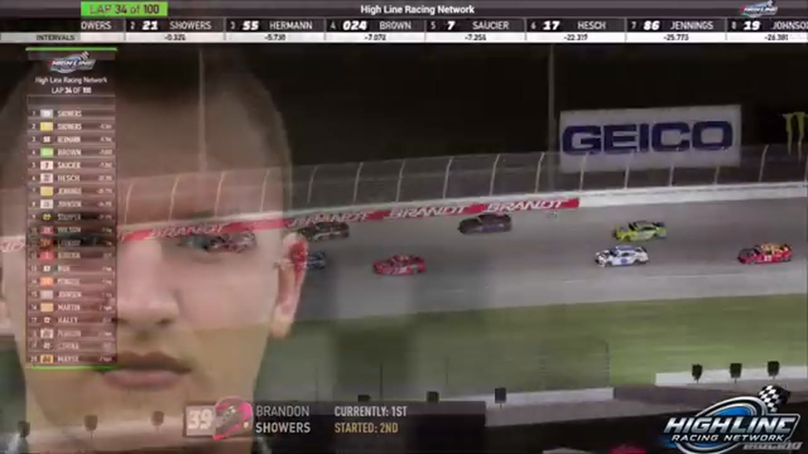

Brandon Showers
Team assignment not stated in the structured owner record.
A PODIUM FILE WITH AN OPEN RESULT HORIZON
- Official files
- 15
- Central editions
- 2
- Exact tape cues
- 13
- Accepted podiums
- 1
Brandon Showers has 1 position-specific top-three receipt: S2 R1 at Daytona (P2). No feature win is currently supported in the accepted result ledger. A consistently stated team affiliation remains open for owner review. The currently indexed source window runs from November 24, 2025 through July 20, 2026.
The official tape index connects the name to 15 race files, 2 Central editions, and 13 primary-broadcast navigation cues. The densest direct-tape categories are battle (4 cues) and qualifying (2 cues). Those counts describe where the name is easiest to find; they are not fault, pace, or performance grades. A source-attributed car frame is published with its original video and timestamp. That is the current discovery map for Brandon Showers.
That is enough for a real result dossier without pretending the archive knows every start or finish. Owner classifications can extend the record later through the same stable race IDs. Separately, 12 Highline Live files sit on the bonus shelf and never enter the official season ledger. The displayed name is labeled transcript normalized; that status remains visible so an owner roster can strengthen or correct the identity without rewriting the evidence trail. Those boundaries define Brandon Showers's public HLRN file.
10 featured race-tape cues
These are discovery routes into complete HLRN broadcasts, not performance grades or inferred results.
- S2 / R1 · RESULT
Ethan Moreno is confirmed atop the Daytona results
The Season 2 Daytona results readout records Ethan Moreno first, Brandon Showers second, and Ryan Wilson third.
Daytona - S1 / R15 · STAGE
Stage 2 winner call at iRacing Superspeedway
S1 / R15 at 1:27:49: The broadcast enters a stage-scoring discussion at iRacing Superspeedway with Nick Bowman, Trevor Haley, Brandon Showers, and Evan Perry in the scoring call. The clip preserves the on-air timing or points call without promoting it into a complete stage result; the accepted feature result ledger remains separate.
iRacing Superspeedway - S1 / R9 · STAGE
Stage 1 winner call at Chicagoland
S1 / R9 at 57:54: The broadcast enters a stage-scoring discussion at Chicagoland with Brandon Showers in the scoring call. The clip preserves the on-air timing or points call without promoting it into a complete stage result; the accepted feature result ledger remains separate.
Chicagoland - S2 / R2 · BATTLE
Trevor Haley and Nick Bowman carry the Iowa lead battle
S2 / R2 at 1:47:15: The Iowa pack compresses in a front-pack fight while Trevor Haley, Nick Bowman, and Brandon Showers are named on the call. The chapter keeps the live battle intact and makes no finishing-order claim.
Iowa - S1 / R11 · BATTLE
The Roval top ten reforms after an unresolved Jacob Brown review
HLRN queues a Jacob Brown replay but cannot find a clear incident and returns live. Nick Bowman leads Trevor Haley, Brandon Showers, and Randy Switzer as the top ten reforms.
Charlotte Roval - S1 / R11 · BATTLE
Nick Bowman becomes the Roval's late-race benchmark
After closing the Jerry Fassett and Dave Schutt replay, HLRN returns live and frames Nick Bowman as the driver Brandon Showers, Trevor Haley, and Joe Quan must beat. This is a late-race form check, not an incident involving the leaders.
Charlotte Roval - S1 / R9 · BATTLE
Brandon Showers and Juan Escamilla carry the Chicagoland lead battle
S1 / R9 at 1:15:37: The Chicagoland pack compresses in a front-pack fight while Brandon Showers and Juan Escamilla are named on the call. The chapter keeps the live battle intact and makes no finishing-order claim.
Chicagoland - S2 / R1 · RESTART
Season 2 takes Daytona's opening green
S2 / R1 at 1:01:00: The official Daytona race broadcast reaches the opening green, with Tyler Gothard, Daryl Sabalos, Brandon Bikey, and Brandon Showers among the first drivers named. This cut begins before the launch and stays with the first live-race call.
Daytona - S2 / R1 · STRATEGY
Fuel-only stops split Daytona's caution cycle
Joshua McKenna, Shane Hatfield, Brandon Showers, and Randy Showers are among the drivers taking fuel only. HLRN follows the short-stop choice as the running order reorganizes under caution.
Daytona - S2 / R2 · INCIDENT
Iowa's opening green immediately ends in an unresolved caution
Trevor Haley launches with Brandon Showers, Matt Brown, and Cory Cook near the front before a distant incident brings out the yellow. HLRN checks Scott Wise and Jim Sagredo but does not establish a visible cause.
Iowa
Recent editions connected to Brandon Showers
Verified team history is not consistently stated. Complete starts, finishes, and points remain open beyond the recovered results. Name normalization remains reviewable against owner records.